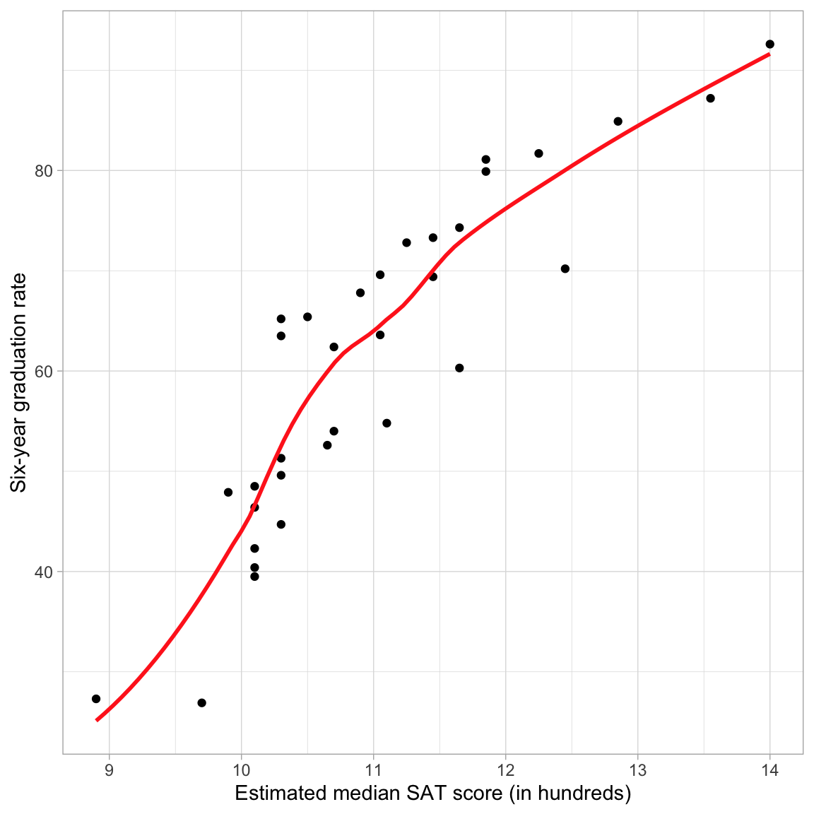
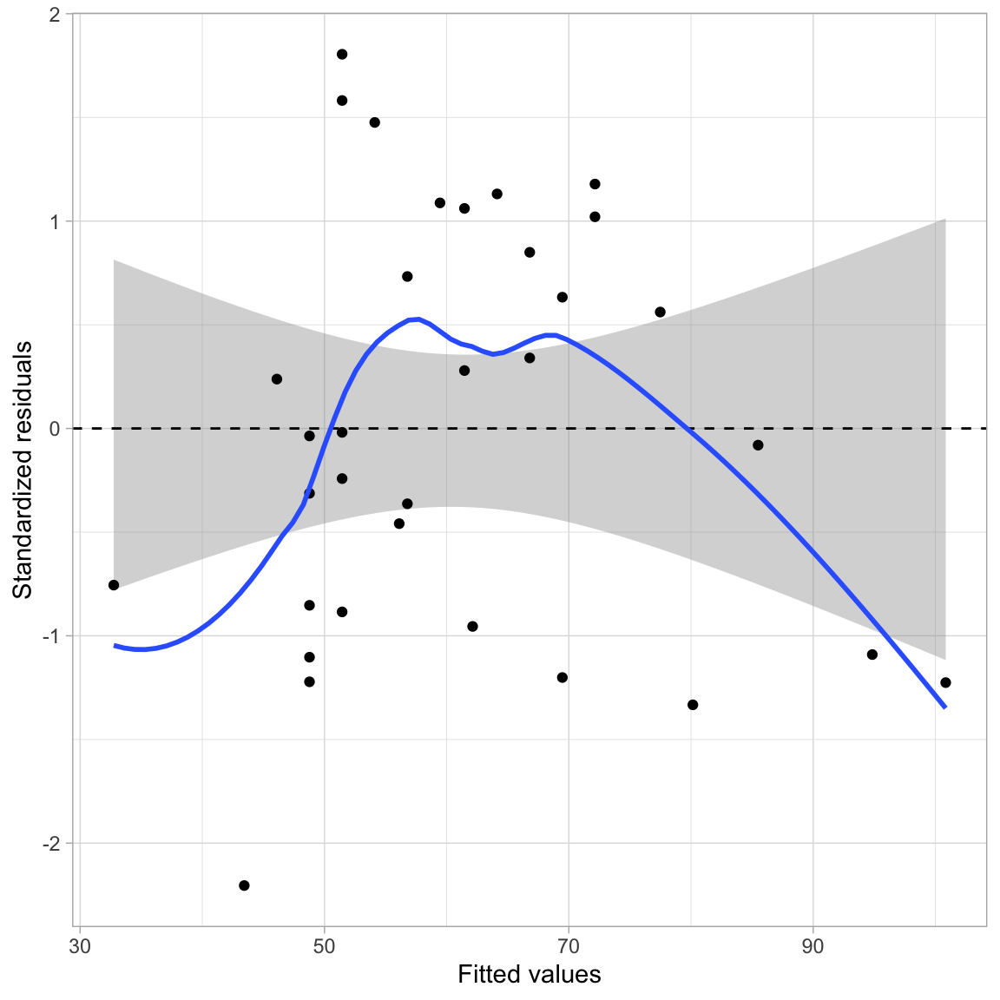
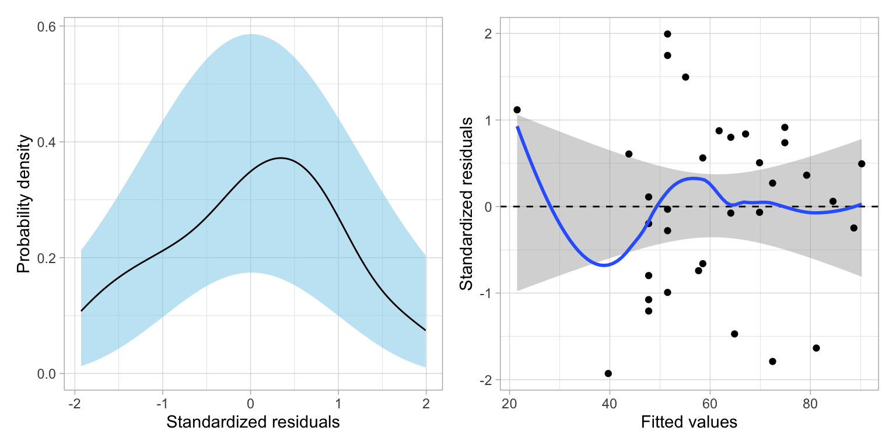
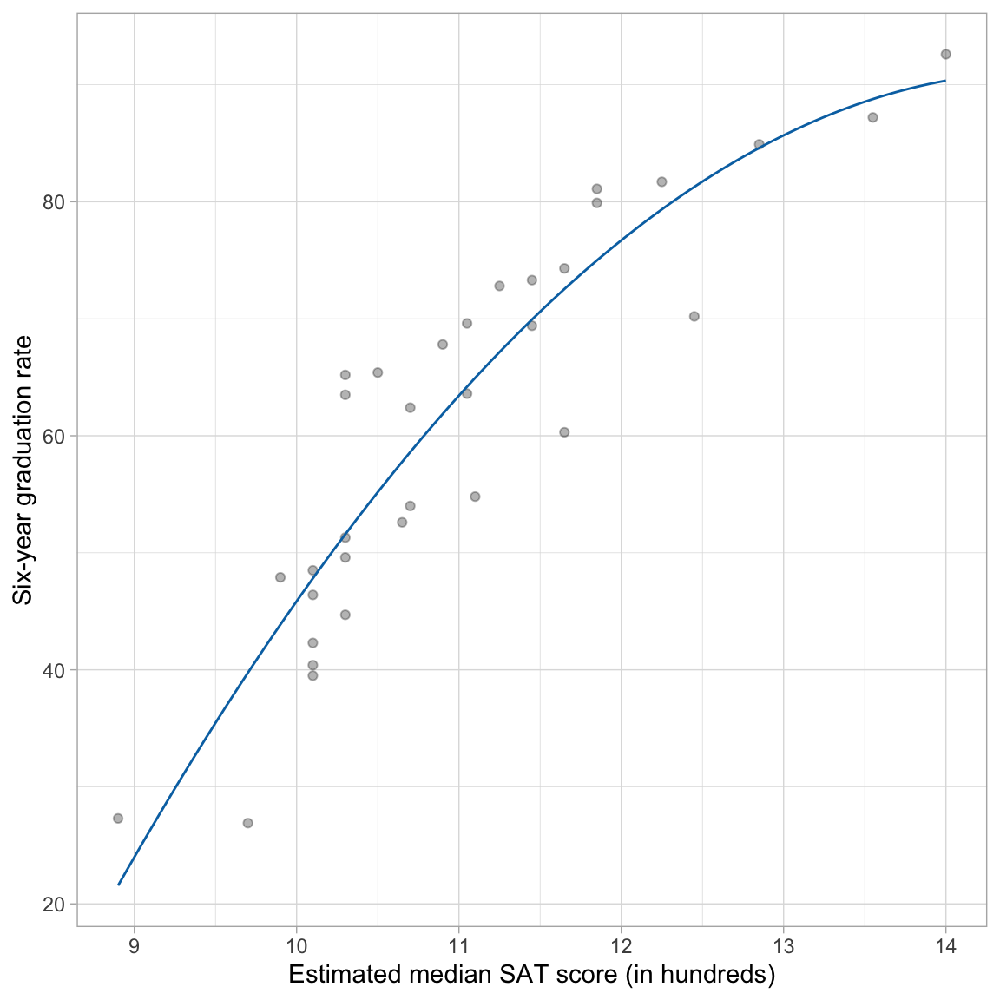
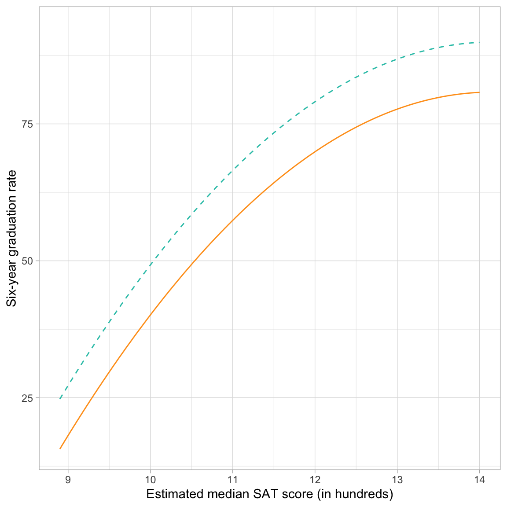
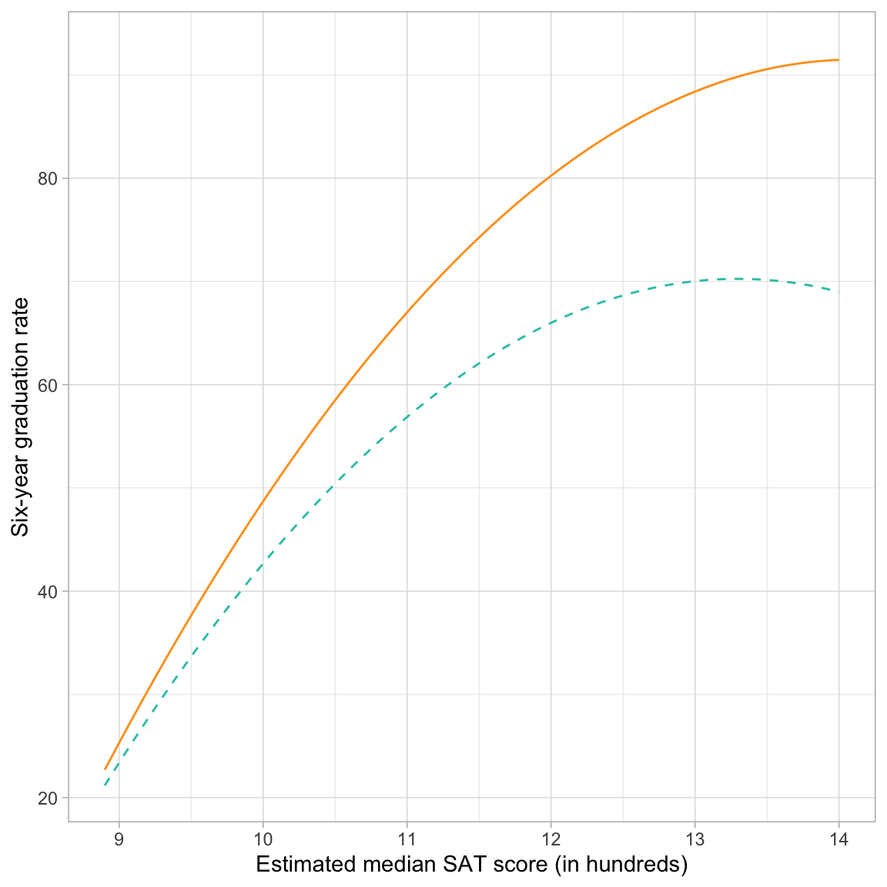

Polynomial Effects
Preparation
In this set of notes, you will learn one method of dealing with nonlinearity. Specifically, we will look at the inclusion of polynomial effects into a model. To do so, we will use the mn-schools.csv dataset (see the data codebook) to examine if (and how) academic “quality” of the student-body (measured by SAT score) is related to institutional graduation rate.
# Load libraries
library(broom)
library(educate)
library(lmtest)
library(patchwork)
library(tidyverse)
# Read in data
mn = read_csv(file = "https://raw.githubusercontent.com/zief0002/bespectacled-antelope/main/data/mn-schools.csv")
# View data
head(mn)Examine Relationship between Graduation Rate and SAT Scores
As always, we begin the analysis by graphing the data. We will create a scatterplot of the graduation rates versus the median SAT scores for the 33 institutions. We will also add a loess smoother to the plot, which is one empirical method that statisticians use to help determine the functional form to use in the regression model.
# Scatterplot
ggplot(data = mn, aes(x = sat, y = grad)) +
geom_point() +
geom_smooth(method = "loess", se = FALSE, color = "#ff2d21") +
theme_light() +
xlab("Estimated median SAT score (in hundreds)") +
ylab("Six-year graduation rate")
The loess smoother suggests that the relationship between SAT scores and graduation rate may be nonlinear. Nonlinearity implies that a the effect of SAT on graduation rates is not constant across the range of SAT scores; for colleges with lower values of SAT (say SAT \(<1100\)) the effect of SAT has a rather high, positive effect (steep slope), while for colleges with higher values of SAT (\(\geq 1100\)) the effect of SAT is positive and moderate (the slope is less steep). Another way of saying this is that for schools with lower SAT scores, a one-unit difference in SAT is associated with a larger change in graduation rates than the same one-unit change for schools with higher SAT values.
Residual Plot: Another Way to Spot Nonlinearity
Sometimes, the nonlinear relationship is difficult to detect from the scatterplot of Y versus X. Often it helps to fit the linear model and then examine the assumption of linearity in the residuals. It is sometimes easier to detect nonlinearity in the scatterplot of the residuals versus the fitted values.
# Fit linear model
lm.1 = lm(grad ~ 1 + sat, data = mn)
# Residual plot: Scatterplot
residual_plots(lm.1, type = "s")
This plot suggests that the assumption of linearity may be violated; the average residual is not zero at each fitted value. For low fitted values it appears as though the average residual may be less than zero, for moderate fitted values it appears as though the average residual may be more than zero, and for high fitted values it appears as though the average residual may be less than zero.
Notice that the pattern displayed in the residuals is consistent with the pattern of the observed data in the initial scatterplot (Figure 1). If we look at the data relative to the regression smoother we see that there is not even vertical scatter around this line. At low and high SAT scores the observed data tends to be below the regression line (the regression is over-estimating the average graduation rate), while for moderate SAT scores the observed data tends to be above the regression line (the regression is under-estimating the average graduation rate).
Polynomial Effects
One way of modeling nonlinearity is by including polynomial effects. In regression, polynomial effects are predictors that have a power greater than one. For example, \(x^2\) (quadratic term), or \(x^3\) (cubic term). The lowest order polynomial effect is the quadratic, which mathematically is,
\[ x^2 = x \times x. \]
So the quadratic term, \(x^2\) is a product of x times itself. Recall that products are how we express interactions. Thus the quadratic term of \(x^2\) is really the interaction of x with itself. To model this, we simply (1) create the product term, and (2) include the product term and all constituent main-effects in the regression model.
# Create quadratic term in the data
mn = mn |>
mutate(
sat_quadratic = sat * sat
)
# View data
head(mn)After creating the quadratic term in the data, we fit the regression model that includes both the linear and quadratic effects as predictors in the model. We then compare the two models using a likelihood ratio test since the linear model is nested in the quadratic model.
# Fit model
lm.2 = lm(grad ~ 1 + sat + sat_quadratic, data = mn)
# Likelihood ratio test
lrtest(lm.1, lm.2)Based on computing the likelihood ratio, the empirical support for the quadratic model is 54.05 times that for the linear model. This is more support than we expect because of sampling error, \(\chi^2(1)=7.98\), \(p=.005\), and suggests that we should adopt the quadratic model. Once we have adopted a model, we can examine the model-level output from that model to obtain the estimate for the residual standard error and other pertinent summaries (e.g., \(R^2\)) that we want to report.
# Model-level output
glance(lm.2)Model 2 explains 83.5% of the variation in graduation rates. The residual standard error estimate is \(\hat\sigma_{\epsilon}=7.79\).
Are the Assumptions More Tenable for this Model?
More important than whether the p-value is small, is whether including the quadratic effect improved the assumption violation we noted earlier. To evaluate this, we will examine the two residual plots for the quadratic model: (1) a density plot of the standardized residuals; and (2) a plot of the standardized residuals versus the fitted values.
# Residual plots
residual_plots(lm.2)
The plot of the standardized residuals versus the fitted values suggests that the residuals for the quadratic model are far better behaved; indicating much more consistency with the assumption that the average residual is zero at each fitted value than the linear model. This is the evidence that we would use to justify retaining the quadratic effect in the model. This plot also suggests that the homoskedasticity assumption is tenable. Finally, the empirical density of the residuals also seems consistent with the assumption of normality for this model.
Reminder: The assumption of independence can’t be evaluated from the plots, but is vary important given we rely on it to be able to correctly compute the likelihood. From the design of the study, we haven’t sampled the schools randomly, nor randomly assigned the schools to their levels of the predictor(s), so we can’t infer independence from that. So the question becomes, does knowing the graduation rate of a school in the population give us information about the graduation rate for other schools in the population with the same median SAT score? If the answer is “no”, then we can call the independence assumption tenable. If the answer is “yes”, the independence assumption is violated and we should not use the lm() function or believe that results from that function are valid.
Interpretation of a Polynomial Term
How do we interpret the quadratic effect of SAT? First, we will write out the fitted model based on the coefficient-level output.
# Coefficient-level output
tidy(lm.2)The fitted equation is:
\[ \widehat{\mathrm{Graduation~Rate}_i} = -366.34 + 62.72(\mathrm{SAT}_i) - 2.15(\mathrm{SAT}^2_i) \]
Since the quadratic term is an interaction, we can interpret this term as we do any other interaction, namely that:
The effect of median SAT score on six-year graduation rates depends on the magnitude of median SAT score.
To better understand the nature of this effect we will plot the fitted equation and use the plot to aid our interpretation.
Note that the t- and p-values from the tidy() output should not be reported or even considered in the likelihood framework. Remember, they are based in the classical hypothesis testing framework. If you need coefficient-level p-values, you will need to fit the appropriate nested models to evaluate the individual effects.
Graphical Interpretation
To plot the fitted equation, we use the geom_function() layer to add the fitted curve. (Note that we can no longer use geom_abline() since the addition of the polynomial effect implies that a line is no longer suitable.) This layer takes the argument fun= which describes a function that will be plotted as a line. To describe a function, use the syntax function(){...}. Here we use this syntax to describe the function of x (which in the ggplot() global layer is mapped to the sat variable). The fitted equation is then also written in terms of x and placed inside the curly braces. (Note that it is best to be more exact in the coefficient values—don’t round—when you create this plot as even minor differences can grossly change the plot.)
# Scatterplot
ggplot(data = mn, aes(x = sat, y = grad)) +
geom_point(alpha = 0.3) +
geom_function(
fun = function(x) {-366.34 + 62.72*x - 2.15 * x^2},
color = "#0072b2"
) +
theme_light() +
xlab("Estimated median SAT score (in hundreds)") +
ylab("Six-year graduation rate")
The fitted curve helps us interpret the nature of the relationship between median SAT scores and graduation rates. The effect of median SAT score on graduation rate depends on SAT score (definition of an interaction). For schools with low SAT scores, the effect of SAT score on graduation rate is positive and fairly high. For schools with high SAT scores, the effect of SAT score on graduation rate remains positive, but it has a smaller effect on graduation rates; the effect diminishes.
Algebraic Interpretation
From algebra, you may remember that the coefficient in front of the quadratic term (\(-2.2\)) informs us of whether the quadratic is an upward-facing U-shape, or a downward-facing U-shape. Since our term is negative, the U-shape is downward-facing. This is consistent with what we saw in the plot. What the algebra fails to show is that, within the range of SAT scores in our data, we only see part of the entire downward U-shape.
This coefficient also indicates whether the U-shape is skinny or wide. Although “skinny” and “wide” are only useful as relative comparisons. Algebraically, the comparison is typically to a quadratic coefficient of 1, which is generally not useful in our interpretation. The intercept and coefficient for the linear term help us locate the U-shape in the coordinate plane (moving it right, left, up, or down from the origin). You could work all of this out algebraically.
You can see how different values of these coefficients affect the curve on Wikipedia. Here is an interactive graph that lets you explore how changing the different coefficients changes the parabola.
{kind=link}
What can be useful is to find where the minimum (upward facing U-shape) or maximum (downward facing U-shape) occurs. This point is referred to as the vertex of the parabola and can be algebraically determined. To do this we determine the x-location of the vertex by
\[ x_\mathrm{Vertex} = -\frac{\hat{\beta}_1}{2 \times \hat\beta_2} \]
where, \(\hat{\beta}_1\) is the estimated coefficient for the linear term and \(\hat{\beta}_2\) is the estimated coefficient for the quadratic term. The y coordinate for the vertex can then be found by substituting the x-coordinate into the fitted equation. For our example,
\[ x_\mathrm{Vertex} = -\frac{62.72}{2 \times -2.15} = 14.58 \]
and
\[ y_\mathrm{Vertex} = -366.34 + 62.72(14.58) - 2.15(14.58^2) = 91.08 \]
This suggests that at a median SAT score of 1458 we predict a six-year graduate rate of 91.08. This x-value also represents the value at which the direction of the effect changes. In our example recall that for higher values of SAT the effect of SAT on graduation rate was diminishing. This is true for schools with median SAT scores up to 1458. For schools with higher SAT scores the effect of SAT score on graduation rate would theoretically be negative, and would be more negative for higher values.
This is all theoretical as our data only includes median SAT scores up to 1400. Everything past that value (including the vertex) is extrapolation. Extrapolation is exceedingly sketchy when we start fitting non-linear models. For example, do we really think that the average graduation rate for schools with a median SAT scores higher than 1458 would actually be smaller than for schools at 1458? It is more likely that the effect just flattens out.
Alternative R Syntax: Fit the Polynomial Term using the I() Function
We can also use a method of fitting polynomial terms directly in the lm() function. To do this, we create the polynomial directly in the model using the I() function. When you use the I() function to create the polynomial term, you do not need to create a new column of squared values in the data set. Here we fit the same quadratic model using this method of fitting the model. (Note: You cannot use the colon notation (:) to fit a polynomial term in the model.)
# Fit model using I() function
lm.2 = lm(grad ~ 1 + sat + I(sat ^ 2), data = mn)
# Model-level output
glance(lm.2)# Coefficient-level output
tidy(lm.2)Adding Covariates: Main Effects Model
We can also include covariates in a polynomial model (to control for other predictors), the same way we do in a linear model, by including them as additive terms in the lm() model. Below we include the public dummy-coded predictor to control for the effects of sector.
# Fit model
lm.3 = lm(grad ~ 1 + sat + I(sat^2) + public, data = mn)
# Compare Model 2 and Model 3
lrtest(lm.2, lm.3)Based on computing the likelihood ratio, the empirical support for Model 3 is 2344.9 times that for the Model 2. This is more support than we expect because of sampling error, \(\chi^2(1)=15.51\), \(p<.001\), and suggests that we should adopt Model 3.
We can also examine the model-level output from Model 3 to summarize the variance accounted for and the residual standard error.
# Model-level output
glance(lm.3)Model 3 explains 89.7% of the variation in graduation rates, an increase of 6.2 percentage points from Model 2. The residual standard error for Model 3, \(\hat\sigma_{\epsilon}=7.02\), has also decreased from that for Model 2 indicating that this model has less error than Model 2. Next, we turn to the coefficient-level output.
# Coefficient-level output
tidy(lm.3)Interpreting the coefficient-level output:
- The predicted average graduation rate for private institutions with a median SAT score of 0 is \(-384.2\). This is extrapolation.
- We will not interpret the linear effect of SAT since we have included a higher-order polynomial effect of SAT. (Lower-order effects of interactions are not interpreted.)
- The quadratic effect of SAT indicates that the effect of median SAT score on graduation rate varies by median SAT scores, after controlling for differences in sector.
- Public institutions have a graduation rate that is 9.12 percentage points lower than private institutions, on average, controlling for differences in median SAT scores.
Private Institutions
\[ \begin{split} \hat{\mathrm{Graduation~Rate}_i} &= -384.16 + 67.04(\mathrm{SAT}_i) - 2.37(\mathrm{SAT}^2_i) - 9.12(0) \\[1ex] &= -384.16 + 67.04(\mathrm{SAT}_i) - 2.37(\mathrm{SAT}^2_i) \end{split} \]
Public Institutions
\[ \begin{split} \mathbf{Public:~} \hat{\mathrm{Graduation~Rate}_i} &= -384.16 + 67.04(\mathrm{SAT}_i) - 2.37(\mathrm{SAT}^2_i) - 9.12(1) \\[1ex] &= -393.29 + 67.04(\mathrm{SAT}_i) - 2.37(\mathrm{SAT}^2_i) \end{split} \]
Note that the coefficients associated with the linear and quadratic effects of median SAT score are identical for both private and public institutions. This implies that the effect of SAT on graduation rates, despite being nonlinear, is the same for both sectors. The difference in intercepts reflects the sector effect on average graduation rates. To visualize these effects, we can plot each fitted curve by including each in a separate geom_function() layer.
# Plot of the fitted model
ggplot(data = mn, aes(x = sat, y = grad)) +
geom_point(alpha = 0) +
geom_function(
fun = function(x) {-384.16 + 67.04*x - 2.37 * x^2},
color = "#2ec4b6",
linetype = "dashed"
) +
geom_function(
fun = function(x) {-393.29 + 67.04*x - 2.37 * x^2},
color = "#ff9f1c",
linetype = "solid"
) +
theme_light() +
xlab("Estimated median SAT score (in hundreds)") +
ylab("Six-year graduation rate")
The curvature (linear and quadratic slopes) of the lines shows the linear and quadratic effect of median SAT scores on graduation rate. For both sectors, the effect of median SAT on graduation rates is positive (institutions with higher median SAT scores tend to have higher graduation rates. But, this effect diminishes for institutions with increasingly higher SAT scores. The main effect of sector is also visualized since private schools have higher graduation rates, on average, than public schools for all levels of median SAT score. This difference, regardless of median SAT score, is constantly that public schools have a lower graduation rate than private schools by 9.12 percentage points.
Interactions with Polynomial Terms
We can also fit interactions between predictors in polynomial models. In this example, an interaction between median SAT score and sector would indicate that the fitted curves for the public and private institutions are not parallel. In other words, the effect of median SAT score on graduation rates does not have the exact same positive, diminishing effect for both public and private institutions.
With polynomial models, there are many ways a potential interaction can play out. In our example, sector can interact with the linear effect of median SAT score or the quadratic effect of median SAT score. Remember that if we include an interaction, we need to include all lower order effects as well. In a polynomial model this means that if we include an interaction with a higher order polynomial term, we also need to include interactions with the lower order polynomial terms.
For us this implies that if we want to include an interaction between sector and the quadratic effect of median SAT score, we also need to include the interaction between sector and the linear effect of median SAT score. Because of this there are two potential interaction models we can fit.
# Interaction between sector and linear effect of SAT
lm.4 = lm(grad ~ 1 + sat + I(sat^2) + public + public:sat, data = mn)
# Interaction between sector and linear and quadratic effects of SAT
lm.5 = lm(grad ~ 1 + sat + I(sat^2) + public + public:sat + public:I(sat^2), data = mn)We now have three candidate models describing the effects of median SAT scores and sector to graduation rates. In increasing levels of complexity these are:
- Main effects model (Model 3);
- Interaction effect between linear SAT term and sector (Model 4); and
- Interaction effect between quadratic SAT term and sector AND linear SAT term and sector (Model 5)
Since each of these models is nested in the subsequent model, we can compare them using a set of likelihood ratio tests.
# Likelihood ratio tests
lrtest(lm.3, lm.4, lm.5)Comparing Model 3 to Model 4, we find a modicum of empirical support for including the interaction between sector and the linear effect of SAT; \(LR=4.57\), \(\chi^2(1)=3.05\), \(p=.081\). However, there is not empirical support for also including the interaction between sector and the quadratic effect of SAT; \(LR=1.25\), \(\chi^2(1)=0.44\), \(p=.504\).
Whether you ultimately adopt Model 3 or Model 4 depends on your research approach and the decisions you made about the the level of evidence you would need to adopt one model over another. Here, since we have taken an exploratory approach to the analysis, we will adopt Model 4, but will acknowledge that the there is uncertainty in this model selection.
Summarizing the Adopted Interaction Model
Again, we will obtain model- and coefficient-level output and use those to summarize the results of the fitted model.
# Model-level output
glance(lm.4)Model 4 explains 90.6% of the variation in graduation rates, an increase of 0.9 percentage points from Model 3. The residual standard error for Model 4, \(\hat\sigma_{\epsilon}=5.64\), has also decreased from that for Model 3 indicating that this model has less error than Model 3.
The coefficient-level output is:
# Coefficient-level output
tidy(lm.4)We can use this to obtain the fitted equation:
\[ \begin{split} \hat{\mathrm{Graduation~Rate}_i} = -&413.80 + 71.65(\mathrm{SAT}_i) - 2.54(\mathrm{SAT}^2_i) + \\ &35.07(\mathrm{Public}_i) - 4.11(\mathrm{SAT}_i)(\mathrm{Public}_i) \end{split} \]
The interaction tells us that the effect of SAT on graduation rate differs for public and private institutions. Rather than parsing this difference by trying to interpret each of the effects, we will again plot the fitted curves for private and public institutions, and use the plot to aid our interpretation.
Private Institutions
\[ \begin{split} \hat{\mathrm{Graduation~Rate}_i} &= -413.80 + 71.65(\mathrm{SAT}_i) - 2.54(\mathrm{SAT}^2_i) + 35.07(0) - 4.11(\mathrm{SAT}_i)(0) \\ &= -413.80 + 71.65(\mathrm{SAT}_i) - 2.54(\mathrm{SAT}^2_i) \end{split} \]
Public Institutions
\[ \begin{split} \hat{\mathrm{Graduation~Rate}_i} &= -413.80 + 71.65(\mathrm{SAT}_i) - 2.54(\mathrm{SAT}^2_i) + 35.07(1) - 4.11(\mathrm{SAT}_i)(1) \\ &= -378.73 + 67.54(\mathrm{SAT}_i) - 2.54(\mathrm{SAT}^2_i) \end{split} \]
Comparing these two fitted equations, we see that not only is the intercept in the two fitted models different (due to the main effect of sector), but now the coefficient for the interaction between sector and the linear effect of SAT also differs; it is lower for public institutions (by 4.11 units) than for private institutions. The quadratic effect of SAT is the same for both public and private institutions. (If we had adopted the model with both interaction terms, the quadratic effect would also be different across sectors.)
To visualize the effect of SAT, we can again plot each fitted curve by including each in a separate geom_function() layer.
# Plot of the fitted model
ggplot(data = mn, aes(x = sat, y = grad)) +
geom_point(alpha = 0) +
geom_function(
fun = function(x) {-378.73 + 67.54 * x - 2.54 * x^2},
color = "#2ec4b6",
linetype = "dashed"
) +
geom_function(
fun = function(x) {-413.80 + 71.65 * x - 2.54 * x^2},
color = "#ff9f1c",
linetype = "solid"
) +
theme_light() +
xlab("Estimated median SAT score (in hundreds)") +
ylab("Six-year graduation rate")
The curvature (linear and quadratic slopes) of the lines now looks different for the two sectors because of the interaction term. (Note that interactions with the linear effect of SAT or the quadratic effect of SAT contribute to a change in the curvature.) For both sectors, the effect of median SAT on graduation rates is positive (institutions with higher median SAT scores tend to have higher graduation rates. But, this effect diminishes for institutions with increasingly higher SAT scores. Private schools have higher graduation rates, on average, than public schools for all levels of median SAT score. Moreover, this difference in graduation rates is getting larger at higher levels of SAT (that is the interaction!).
Presenting Results from the Analysis
It is important to indicate the set of candidate models considered in the model adoption process and also present the statistical evidence used to select among them. However, there is no one preferred way to do this. For example, some educational scientists present this in the prose (text), while others may present this information in tables. Here, is one possible method of presenting the models and the evidence from the set of likelihood ratio tests we used in the analysis.
We fitted the following set of five candidate models:
\[ \begin{split} \mathbf{Model~1:~}\mathrm{Graduation~Rate}_i &= \beta_0 + \beta_1(\mathrm{SAT}_i) + \epsilon_i \\[1ex] \mathbf{Model~2:~}\mathrm{Graduation~Rate}_i &= \beta_0 + \beta_1(\mathrm{SAT}_i) + \beta_2(\mathrm{SAT}^2_i) + \epsilon_i \\[1ex] \mathbf{Model~3:~}\mathrm{Graduation~Rate}_i &= \beta_0 + \beta_1(\mathrm{SAT}_i) + \beta_2(\mathrm{SAT}^2_i) + \beta_3(\mathrm{Public}_i) + \epsilon_i \\[1ex] \mathbf{Model~4:~}\mathrm{Graduation~Rate}_i &= \beta_0 + \beta_1(\mathrm{SAT}_i) + \beta_2(\mathrm{SAT}^2_i) + \beta_3(\mathrm{Public}_i) + \\ &~~~~~\beta_4(\mathrm{SAT}_i)(\mathrm{Public}_i) + \epsilon_i \\[1ex] \mathbf{Model~5:~}\mathrm{Graduation~Rate}_i &= \beta_0 + \beta_1(\mathrm{SAT}_i) + \beta_2(\mathrm{SAT}^2_i) + \beta_3(\mathrm{Public}_i) +\\ &~~~~~\beta_4(\mathrm{SAT}_i)(\mathrm{Public}_i) + \beta_5(\mathrm{SAT}^2_i)(\mathrm{Public}_i) + \epsilon_i \\[1ex] \end{split} \]
To evaluate these candidate models, likelihood ratio tests (LRTs) were used to compare each subsequently more complex model to the previous candidate model (e.g., Model 2 was compared to Model 1, Model 3 was compared to Model 2). More complex models were adopted if the p-value for the LRT was below a threshold of .10; a more liberal criterion than .05 adopted due to the exploratory nature of the analysis. The results of these tests are presented in the table below.
Code
# Load library
library(gt)
# Create data frame of model results
my_models = data.frame(
model = c("Model 1", "Model 2", "Model 3", "Model 4", "Model 5"),
df = c(3, 4, 5, 6, 7),
log_lik = c(-113.55, -109.56, -101.80, -100.28, -100.06),
lr = c(NA, 54.05, 2344.90, 4.57, 1.25),
lr_test = c(NA, "$$\\chi^2(1)=7.98,~p=.005$$", "$$\\chi^2(1)=15.51,~p<.001$$", "$$\\chi^2(1)=3.05,~p=.081$$", "$$\\chi^2(1)=0.45,~p=.504$$")
)
# Create table
my_models |>
gt() |>
cols_label(
model = md("*Model*"),
df = md("*df*"),
log_lik = md("*Log-likelihood*"),
lr = md("*LR*"),
lr_test = md("*LRT*")
) |>
cols_align(
columns = c(model),
align = "left"
) |>
cols_align(
columns = c(df, log_lik, lr, lr_test),
align = "center"
) |>
fmt_missing(
missing_text = ""
)| Model | df | Log-likelihood | LR | LRT |
|---|---|---|---|---|
| Model 1 | 3 | -113.55 | ||
| Model 2 | 4 | -109.56 | 54.05 | $$\chi^2(1)=7.98,~p=.005$$ |
| Model 3 | 5 | -101.80 | 2344.90 | $$\chi^2(1)=15.51,~p<.001$$ |
| Model 4 | 6 | -100.28 | 4.57 | $$\chi^2(1)=3.05,~p=.081$$ |
| Model 5 | 7 | -100.06 | 1.25 | $$\chi^2(1)=0.45,~p=.504$$ |
You should also include the estimates and any summary measures from the model(s) you adopt. Here we would for sure want to report the estimates and summaries for Model 4. Since the number of candidate models here is small (only five models) I would probably present the estimates and summaries from all five candidate models.
Code
# Load library
library(texreg)
# Create the table
htmlreg(
l = list(lm.1, lm.2, lm.3, lm.4, lm.5),
stars = numeric(0), #No p-value stars
digits = 2,
padding = 20, #Add space around columns (you may need to adjust this via trial-and-error)
include.adjrs = FALSE, #Omit Adjusted R^2
include.nobs = FALSE, #Omit sample size
include.rmse = TRUE, #Include RMSE
custom.model.names = c("M1", "M2", "M3", "M4", "M5"),
custom.coef.names = c("Intercept", "Median SAT score (L)", "Median SAT score (Q)",
"Public", "Median SAT score (L) x Public",
"Median SAT score (Q) x Public"),
custom.note = "Note. (L) = Linear effect. (Q) = Quadratic effect.",
reorder.coef = c(2:6, 1), #Put intercept at bottom of table
caption.above = TRUE, #Move caption above table
inner.rules = 1, #Include line rule before model-level output
outer.rules = 1, #Include line rules around table
caption = "Table 2: Coefficients (and standard errors) for five candidate models (M1--M5) predicting variation in six-year graduation rates."
)| M1 | M2 | M3 | M4 | M5 | |
|---|---|---|---|---|---|
| Median SAT score (L) | 13.35 | 62.72 | 67.04 | 71.65 | 73.12 |
| (1.24) | (17.27) | (13.93) | (13.82) | (14.19) | |
| Median SAT score (Q) | -2.15 | -2.37 | -2.54 | -2.61 | |
| (0.75) | (0.61) | (0.60) | (0.61) | ||
| Public | -9.12 | 35.07 | 304.22 | ||
| (2.19) | (26.92) | (444.95) | |||
| Median SAT score (L) x Public | -4.11 | -52.64 | |||
| (2.50) | (80.12) | ||||
| Median SAT score (Q) x Public | 2.17 | ||||
| (3.59) | |||||
| Intercept | -86.08 | -366.34 | -384.16 | -413.80 | -422.16 |
| (13.68) | (98.62) | (79.41) | (79.24) | (81.33) | |
| R2 | 0.79 | 0.84 | 0.90 | 0.91 | 0.91 |
| RMSE | 7.79 | 7.02 | 5.64 | 5.48 | 5.55 |
| Note. (L) = Linear effect. (Q) = Quadratic effect. | |||||